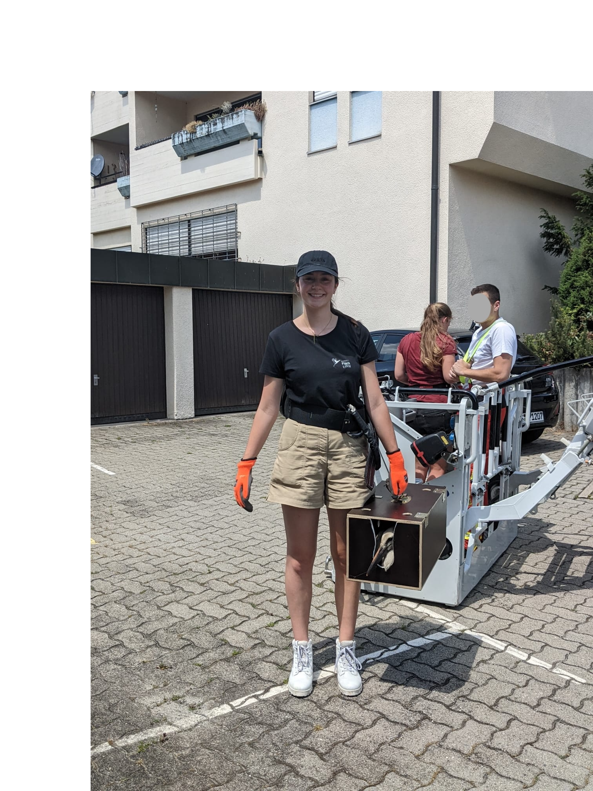

Transporting a white stork chick back to its nest in Radolfzell, Germany.

Training wild sulphur-crested cockatoos to use a touchscreen in Sydney, Australia.
Questions about the living creatures around us are what first drew me to biology. More broadly, the ability to answer my own questions is what drew me to science. Studying animal behavior and ecology, especially in urban environments, allows me to investigate what we see every day and often take for granted.
Transporting a white stork chick back to its nest in Radolfzell, Germany.
Training wild sulphur-crested cockatoos to use a touchscreen in Sydney, Australia.

If you're interested in chatting about my work, I'd love to hear from you.
larafiona.blumenstiel@uzh.ch